|
<< Click to Display Table of Contents >> Chart Styles |


|
Chart Styles
|
<< Click to Display Table of Contents >> Chart Styles |
|
NinjaTrader supports a large variety of Chart Styles. This page explains how each Chart Style is created in a chart, and provides tips for reading charts of different styles. Please see the Working with Price Data page for information on how to change Chart Styles.
Note: Some chart styles are intended to be used with a specific Bar Type, and will be most effective when paired with that Bar Type. For example, Point and Figure can be found in both the Bar Types and Chart Styles menus, and these two will be most useful in tandem on a chart. As another example, the Renko Bar Type can be most effective when paired with the Open/Close Chart Style. When you select a Bar Type, the recommended Chart Style will be selected automatically, but it can still be changed afterward. |
 Understanding the Box Chart Style
Understanding the Box Chart Style
Box Chart StyleThe Box Chart Style was specifically designed to simplify multi-timeframe analysis on charts. The Box style draws a rectangular shape for each bar, colored green by default for up bars, and red by default for down bars. Rather than differentiating between the Open, High, Low, and Close of a specific time interval, the Box style displays only the High and Low. This is done to allow for a second Data Series which will show greater price-action granularity to be painted on top of Box bars. For example, in the image below, the Box style is used to show the High and Low of a higher timeframe, while Candlesticks are used to show more precise intra-bar price action on a lower timeframe for the same instrument. Reading a Box ChartBox bars can be used to essentially define a range of trading that occurred within a specified timeframe, but they will not reveal anything about intra-bar price action. The Box style is most effective when paired with a lower-timeframe Data Series in the same Chart Panel, as in the example below. 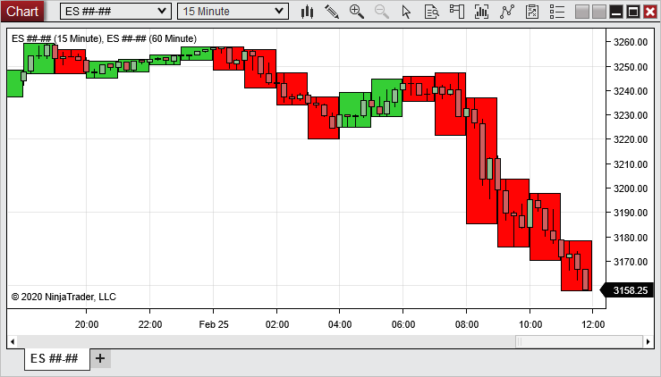
In the image above, a 60-minute Data Series of the E-Mini S&P 500 futures contract is using the Box style, and is painted behind a 15-minute Data Series of the same instrument, clearly showing the shorter timeframe price movement within the longer timeframe. For more information on painting one Data Series on top of another, see the "How to change the z-order (paint order) of a chart object" section of the Working with Objects on Charts page. |
 Understanding the Candlestick Chart Style
Understanding the Candlestick Chart Style
Candlestick Chart StyleThe Candlestick Chart Style plots four data points per bar: Open, High, Low, and Close. Candlesticks are generally painted one color for up bars (green by default), and another color for down bars (red by default).
Reading a Candlestick ChartCandlesticks are broken into two main sections, a candle body and a wick. In an up bar, the top of the candle body represents the Close price, and the bottom represents the Open price. In a down bar, the top of the candle body represents the Open price, and bottom represents the Close price. In either up or down bars, the high point of the wick represents the High price, and the low point of the wick represents the Low price. 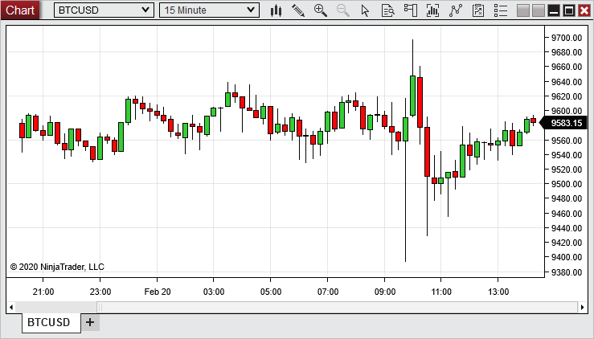
|
 Understanding the Equivolume Chart Style
Understanding the Equivolume Chart Style
Equivolume Chart StyleThe Equivolume Chart Style plots four data points per bar: Open, High, Low, and Close. Additionally, the width will vary per bar. Equivolume bars are generally painted one color for up bars (green by default), and another color for down bars (red by default).
Reading a Candlestick ChartEquivolume bars are broken into two main sections, a candle body and a wick. In an up bar, the top of the candle body represents the Close price, and the bottom represents the Open price. In a down bar, the top of the candle body represents the Open price, and bottom represents the Close price. In either up or down bars, the high point of the wick represents the High price, and the low point of the wick represents the Low price. The width of the bar indicates how much volume was received within that bar in comparison to the other bars in view. So a wide bar indicates high volume and a thin bar indicates low volume. 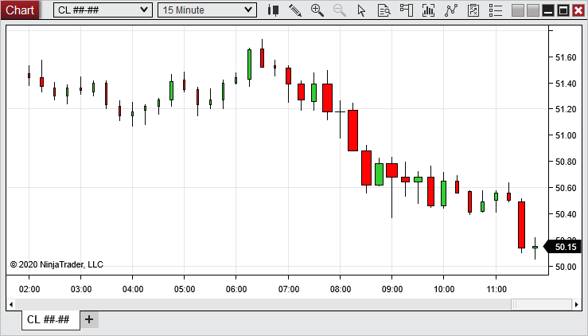 |
 Understanding the Hollow Candlestick Chart Style
Understanding the Hollow Candlestick Chart Style
Hollow Candlestick Chart StyleThe Hollow Candlestick Chart Style plots four data points per bar: Open, High, Low, and Close. Hollow Candlesticks are generally painted one color for up bars (green by default), another color for down bars (red by default), and another color for doji base (dim gray by defaut).
Reading a Hollow Candlestick ChartHollow Candlesticks are broken into two main sections, a candle body and a wick. In an up bar, the top of the candle body represents the Close price, and the bottom represents the Open price. In a down bar, the top of the candle body represents the Open price, and bottom represents the Close price. In either up or down bars, the high point of the wick represents the High price, and the low point of the wick represents the Low price. In a doji bar, the Open price and Close price are the same, represented by a line on the wick. 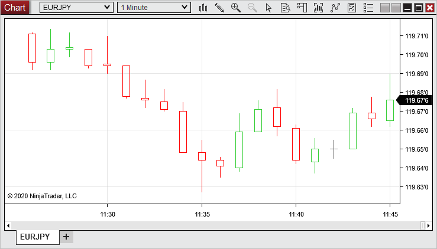
|
 Understanding the Kagi Line Chart Style
Understanding the Kagi Line Chart Style
Kagi Line Chart StyleThe Kagi Line Chart Style was specifically designed to function with the Kagi Bar Type, which offers an alternative way of analyzing price action with a different perspective than traditional time-based bars.
Reading a Kagi Line ChartFor more information on reading and setting up Kagi Line charts, see the "Understanding Kagi Bars" section of the Bar Types page.
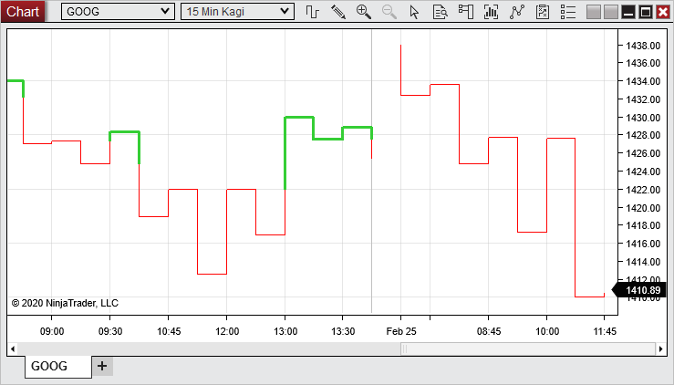 |
 Understanding the Line on Close Chart Style
Understanding the Line on Close Chart Style
Line On Close Chart StyleThe Line on Close Chart Style reduces price-action noise by focusing solely on the Close price of an instrument at a specific time interval. This style connects the Close price at the end of each interval with a straight line.
Reading a Line on Close ChartWhen looking at a Line on Close chart, it is important to differentiate between the line itself and the pivots between the line's many segments. Each point at which the line pivots represents a Close price for the instrument, while the lines between those points do not necessarily represent true historical prices. Instead, they are drawn as a way to smooth the transition from one Close price to another.
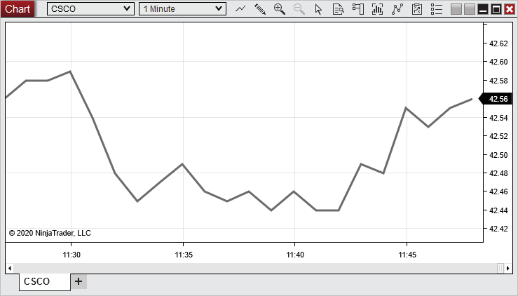 |
 Understanding the Mountain Chart Style
Understanding the Mountain Chart Style
Mountain Chart StyleThe Mountain Chart Style functions similarly to the Line on Close style covered in the previous section. The Mountain style connects Close prices of a chosen interval with straight line segments, and also colors the region below the connected line segments with a solid color.
Reading a Line on Close ChartWhen looking at a Mountain chart, it is important to differentiate between the line itself and the pivots between the line's many segments. Each point at which the line pivots represents a Close price for the instrument, while the lines between those points do not necessarily represent true historical prices. Instead, they are drawn as a way to smooth the transition from one Close price to another. It is also important to understand that the shaded area does not necessarily represent historical price points, but is intended simply as a visual aid.
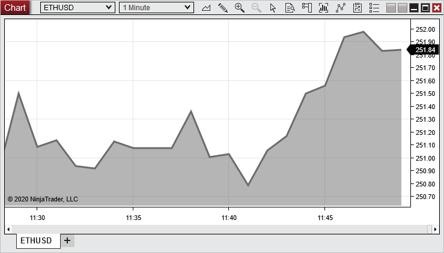
|
 Understanding the OHLC Chart Style
Understanding the OHLC Chart Style
OHLC Chart StyleThe OHLC Chart Style plots four data points per bar: Open, High, Low, and Close. Like Candlesticks, OHLC bars are generally painted one color for up bars (green by default), and another color for down bars (red by default).
Reading an OHLC ChartThe small left- and right-facing flags on each bar hold the key to interpreting OHLC charts. When the right-facing flag is higher on the bar than the left-facing flag, this indicates an up bar, and when the left-facing flag is higher, this represents a down bar. This should correspond to the colors of the bars, as well. The space between the flags represents the Open-to-Close price action, while the parts of the bar extending beyond the flags represent the High and Low (regardless of bar direction).
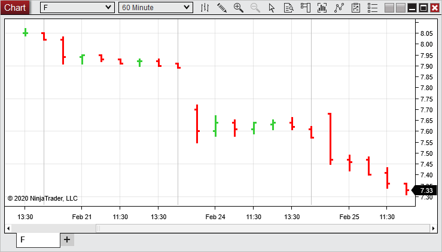 |
 Understanding the HLC Chart Style
Understanding the HLC Chart Style
HLC Chart StyleThe HLC Chart Style plots three data points per bar: High, Low, and Close. Like OHLC bars, HLC bars are generally painted one color for up bars (green by default), and another color for down bars (red by default).
Reading an HLC ChartHLC bars include only one flag extending to the right of each bar, as opposed to OHLC bars, which include both left- and right-facing flags. The right-facing flag represents the Close price of a bar, while the extreme upper and lower points of the bar represent the High and Low, respectively.
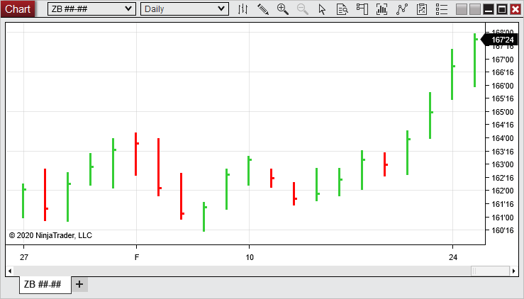
|
 Understanding the HiLo Chart Style
Understanding the HiLo Chart Style
HiLo Chart StyleThe HiLo Chart Style plots two data points per bar: High and Low. Like OHLC bars, HiLo bars are generally painted one color for up bars (green by default), and another color for down bars (red by default).
Reading a HiLo ChartHiLo bars remove the left- and right-facing flags found on OHLC and HLC bars. The upper and lower points of each bar represent the High and Low, respectively.
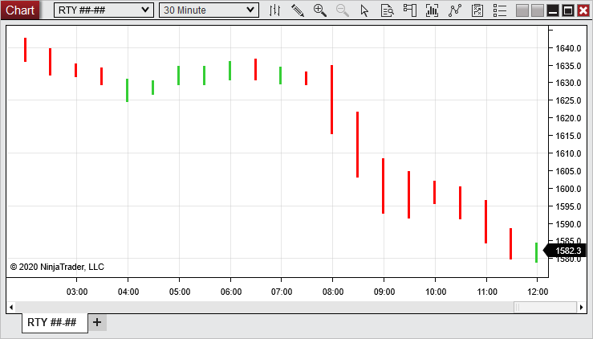
|
 Understanding the Open/Close Chart Style
Understanding the Open/Close Chart Style
Open/Close Chart StyleThe Open/Close Chart Style simplifies intra-bar noise by taking High and Low prices out of the equation. This Chart Style paints up bars in a green color by default, and down bars in a red color by default, and simply plots the difference between the Open and Close during a chosen interval.
Reading Open/Close ChartsIn an up bar, the bottom of an Open/Close bar represents the Open price, while the top of the bar represents the Close price. In a down bar, the top represents the Open, while the bottom represents the Close.
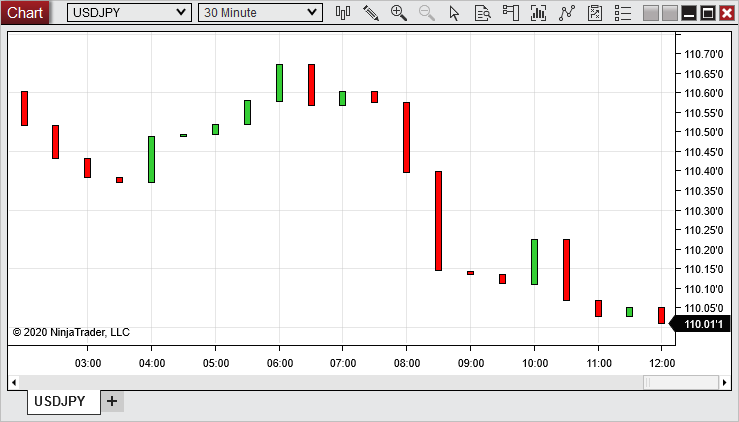
|
 Understanding the Point and Figure Chart Style
Understanding the Point and Figure Chart Style
Point and Figure Chart StyleThe Point and Figure Chart Style was specifically designed to function with the Point and Figure Bar Type, which is an alternative way of analyzing price action from a different perspective than traditional time-based bars.
Reading a Point and Figure ChartFor more information on reading and setting up Point and Figure charts, see the "Understanding Point and Figure Bars" section of the Bar Types page.
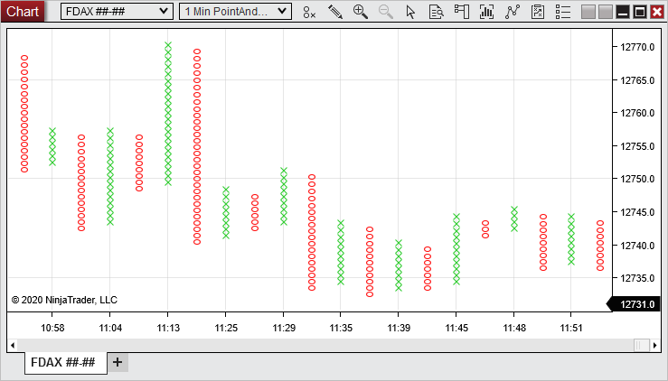 |